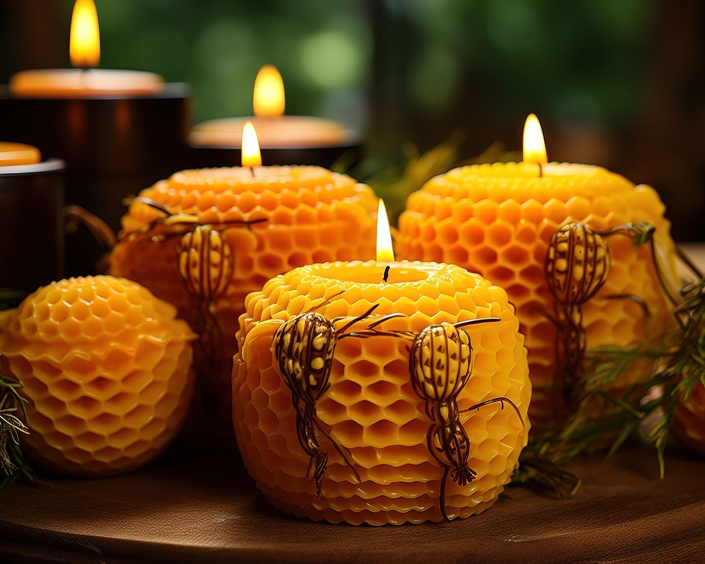
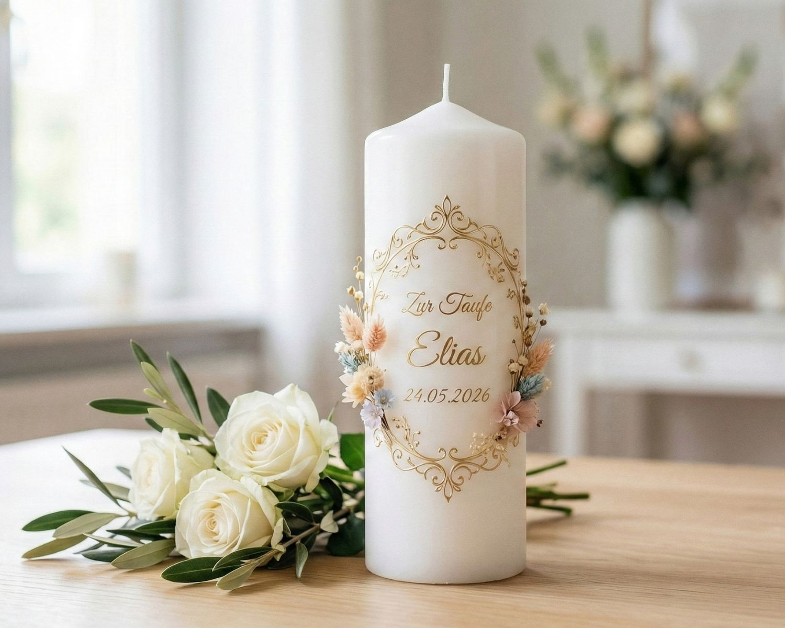
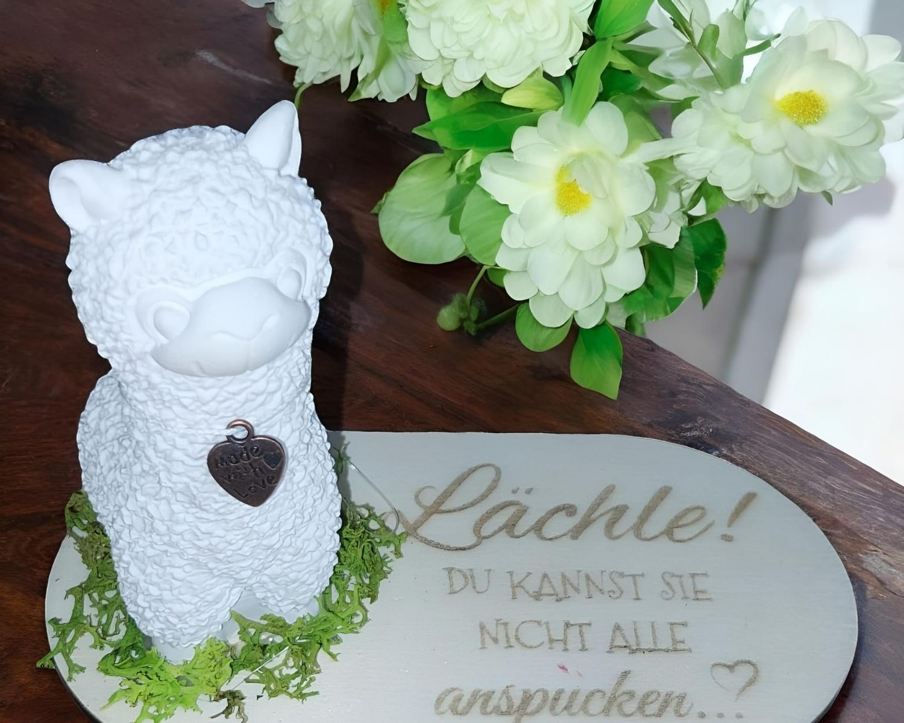

Wärme in jeder Form.
Vom sanften Duft bis zur feierlichen Taufkerze – wir fertigen Lichtblicke, die deinen Alltag und deine Feste verzaubern.

Gold der Natur
Bienenwachs
Reinstes Wachs von regionalen Imkern. Erlebe den unvergleichlichen, warmen Honigduft eines Naturwunders.

Unvergesslich
Begleiter für deine Meilensteine
Ob Taufe, Hochzeit oder Kommunion – wir gießen deine Erinnerung in eine Kerze, die so individuell ist wie dein Moment.
Jetzt Wunschkerze planen →

Keraflott-Kunst
![[Duftwachs Melts]](duftmelts.jpg)
Sinnesreise
Duftmelts
Aromatherapie für dein Zuhause.